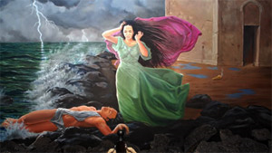
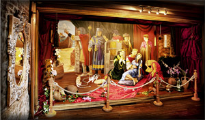
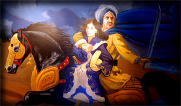

.png)

Kız Kulesi’nin eski zamanlardaki isimleri, Damalis ve Leandros’dur. Damalis ismi, zamanın Atina kralı Kharis’in karısının adıdır. Damalis ölünce bu sahillere gömülmüş ve kuleye de bu isim verilmiştir. Ayrıca, Kule Bizans zamanı’nda “küçük kale” anlamına gelen Arcla olarak da anılmıştır.
İstanbul’un fethinden sonra adadaki mevcut kule yıktırılıp yerine ahşap bir kule inşa edilir. 1719’da bu ahşap kule çıkan yangınla kül olur. 1725 yılında şehrin Başmimarı Nevşehirli Damat İbrahim Paşa tarafından kâgir olarak yeniden inşa edilir. Kule üst kısmı değiştirilerek üst tarafa camlı bir köşk ve onun üzerine de kurşunla kaplı bir kubbe eklenir. Ünlü hattat Rakim Efendi kule kapısının üzerindeki mermere Sultan II. Mahmut'un tuğrasını taşıyan bir kitabe yerleştirir. 1857'de Kule’ye tekrar fener ilave edilir ve 1920 yılında fenerin lambası otomatik ışık sistemine kavuşur.
Kız kulesi tarihin akışı içinde; ticari gemilerden vergi toplama, savunma, fener, 1830’daki kolera salgınında karantina hastanesi ve radyo istasyonu olarak birçok farklı amaç için kullanılmıştır. Cumhuriyet’ten sonra bir süre deniz feneri olarak da kullanılan kule;1964 Savunma Bakanlığı’na, 1982 Denizcilik İşletmeleri’ne devredilir.
Kızkulesi’nin, 1995 yılında Turizm Bakanlığı tarafından işletmesinin 49 yıllığına Hamoğlu Holding’e kiralanmasının ardından, Kule’nin restorasyon süreci başladı.
Aslında, Kız Kulesi’nin bir turizm tesisine dönüştürülmesi fikri yeni değildi. Daha 19. yüzyıl sonunda, 1 Nisan 1880 tarihli bir gazete haberi, kulenin konaklama ve yeme-içme bölümleri içeren bir yapıya dönüştürülmesinin düşünüldüğünü duyuruyordu. La Turquie’nin, “Nouvelles du Jour” (Günün Haberleri) bölümünde, Vakit gazetesinden naklen verilen haberde, bir İngiliz’in, Kızkulesi’ni 12 yıllığına kiralamak istediği ve niyetinin “Bu Bizans anıtını, restoranı ve kahvehanesi olan bir otele çevirmek” olduğu bildiriliyordu. Bu projenin hayata geçirilmediği, yine La Turquie’nin 26 Temmuz 1883 tarihli nüshasında, Kızkulesi’nin onarıma çok muhtaç bir durumda bulunduğunu bildiren haberden anlaşılıyor.. Ancak, Fransa sefirinin Kızkulesi’nde bir davet vermeye hazırlandığını ortaya koyan belge, 19. yüzyıl sonunda yapının çok özel konumu nedeniyle gözde bir ağırlama mekanı olarak algılanmaya devam ettiğini de gösteriyor.
Kızkulesi Restorasyon Projesi, Turizm Bakanlığı'nın daha önce yaptırdığı ve 16 Aralık 1993 tarihinde onayladığı 1/100 ölçekli "Kızkulesi Rövöle Projesi" esas alınarak başlatıldı. Restaratör Yüksek Mimar Mehmet Alper'in başkanlığında Tures Limited Şirketi tarafından Kızkulesi'nin ön projesi hazırlandı
Ön proje oluşturulurken kulenin önce ayrıntılı bir araştırması yapıldı. Üniversite arşivleri ve kütüphaneler başta olmak üzere ulaşılabilen tüm veriler elde edildi. Yazılı kaynaklar, arşiv belgeleri, gravürler, eski fotoğraflar, sözlü ve yazılı anlatımlar tek tek değerlendirildi ve mevcut veriler korunarak mekana uygun işlevsel bir proje hazırlandı.
III No'lu Kültür ve Tabiat Varlıklarını Koruma Kurulu’nun projeyi onaylamasının ardından, restorasyona başlanabilmesi için gerekli izinler tamamlandı ve 3 Şubat 1998 yılında Yapı Ruhsatı alındı.
Restorasyon sırasında, Kulenin Sarayburnu’na bakan cephesinde 45 derece, Boğaziçi’ne bakan tarafında ise dik açılı mazgal delikleri ortaya çıkmıştır. Daha önce varlığı bilinmeyen bu mazgallar sahip olduğu açılı yapısı ile hem gün ışığının içeriye girmesini sağlıyor hem de top atışlarını kolaylaştırıyordu. Restorasyon sırasında Kızkulesi’nin sonradan ilave edilmiş bazı bölümleri kaldırılmış, Kule, dört köşe demir kasnaklarla takviye edilmiştir.
Kızkulesi, Hamoğlu Holding tarafından aslına uygun olarak gerçekleştirilen restorasyon sürecinin ardından 2000 yılında tarihinde ilk defa ziyarete açılmış ve o günden sonra İstanbul’un gece & gündüz yaşayan bir mekanı haline gelmiştir.
KIZ KULESİ EFSANELERİ
HERO & LEANDROS
Hero ve Leandros’un ölümsüz aşk hikayesi...
Yüzerek geleceğim sana.
Güzel kız, senin sevgin uğruna,
Sana geleceğim.
Sen beklerken beni ürkek bakışlarla,
Yüzerek geleceğim sana.
Dalgalar gemilere bile geçit vermese,
Yüzerek geleceğim sana.
Azgın dalgalar arasından...
Bu efsanenin Çanakkale boğazının en dar geçidinde ortaya çıktığı da söylenir. Ancak günümüzde, belki de sahip olduğu romantik dokusundan olsa gerek, Kızkulesi denildiğinde en çok bilinen hikaye “Hero ve Leandros”un ölümsüz aşk hikayesidir.
Efsaneye göre zamanında Üsküdar sırtlarında Tanrıça Afrodit adına bir tapınak vardır. Hikayede adı geçen Hero, genç kızların görev yaptığı bu tapınağın rahibelerindendir. Hero, Kulede kumrulara bakmakla görevlidir. Her yıl ilkbaharda, doğanın uyanışı adına tapınak çevresinde törenler yapılır, aşkı bulamayanlar, hayal ettikleri sevgililerine kavuşabilmek için Afrodit'e yakarırlar.
Boğazın karşı kıyısında oturan Leandros da bu törene katılmak için tapınağa gelir ve Hero'yla karşılaşır. İki genç ilk görüşte birbirine aşık olur. Ancak arada büyük bir engel vardır. Hero, bir rahibedir ve evlenmesi yasaktır. Oysa Leandros, ne pahasına olursa olsun Hero’ya kavuşmak istemektedir. Bir gece kıyıdan Kule’ye bakarken, Kızkulesi’nin tepesinde bir ateşin yandığını görür. Hero, elindeki meşale ile Leandros’a yol göstermektedir. Durgun denize, ayın parlak ışığı eşlik eder. İyi ve dayanıklı bir yüzücü olan Leandros, Hero’ya kavuşma hayaliyle Boğaz’ın sularına atlar. Var gücüyle yüzmeye başlar ve Kule’ye varır. İki genç, o gece aşklarını kutsarlar.
Kızkulesi o günden sonra her gece iki gencin gizli aşkına ve yasak sevişmelerine tanıklık eder. Leandros, fırtınalı bir gecede, biricik aşkı Hero’ya kavuşmak için Boğaz’ın azgın sularına bırakır kendini. Hero da her gece olduğu gibi meşalesiyle, Leandros’a yol gösterir. Ancak Hero’nun, biricik aşkına yol gösteren meşalesi rüzgarın da etkisiyle söner. Karanlıkta yolunu kaybeden Leandros, nereye doğru yüzeceğini bilemez ve Kule’den gittikçe uzaklaşır. Yorgun ve bitkin düşen Leandros daha fazla dayanamaz ve Boğaz’ın karanlık sularında kaybolur. İçini kaplayan dayanılmaz endişe ile sabaha kadar sevgilisini bekleyen Hero, Leandros’un cansız bedenini karşı kıyıda görünce, bu acıya dayanamaz ve kendini Kızkulesi'nden Boğaz’ın sularına bırakır.
YILANLI HİKAYE

Hero ve Leandros’un, kavuşamayan âşıklara atfen anlatılan bu hikâyesinden başka bir de Kleopatra'nın sonuna benzer bir sonun anlatıldığı yılanlı hikâye vardır.
Bizans imparatorunun bir kızı olur. İmparator buna çok sevinir ve kızının doğum gününü, ülkesinde bayram ilan eder. Her yıl, prensesin doğum günü bayramı görkemli bir şekilde kutlanır. İmparator, bilginlerinden, kızının tahta hazırlanması için eğitilmesini ister. Fakat bilginlerin en yaşlısı, imparatora, kızının on sekiz yaşına basmadan bir yılan tarafından sokularak öleceğini kehanet eder. Bunun üzerine imparator, denizin ortasındaki küçük bir adacık üzerinde yer alan kuleyi onararak kızını buraya yerleştirir.
Böylece yıllar geçer. İmparatorun kızı on sekizine basmak üzeredir. Ancak, kaderin kaçınılmazlığını kanıtlarcasına, kuleye gönderilen üzüm sepetinden çıkan bir yılan, prensesin tenine süzülerek zehrini boşaltır. İmparator, kızının ölümüne çok üzülür ve kaderden kaçılamayacağını anlar. Kızı toprağa gömülürse, yılanlara yem olacağını düşünerek, prensesin cansız bedenini mumyalatıp pirinç bir tabuta koydurur. Tabutun da Ayasofya'nın yüksek duvarlarından birinin üstüne yerleştirilmesini emreder. Böylece, kızının hiç değilse ölüsünün yılanlardan korunacağını düşünür. Bugün bu tabutun üstünde iki delik vardır. Yılanın, prensesi ölümünden sonra da rahat bırakmadığı anlatılır.
>
BATTAL GAZİ HİKAYESİ
"Atı alan üsküdarı geçti"
Kızkulesi ile ilgili olarak en sık anlatılan hikâyelerin sonuncusu ise Osmanlı Dönemi’nde geçer. Hikaye; Battal Gazi'nin askerleri ile birlikte Kızkulesi'ne baskın yaptığını ve kulede saklanan hazineleri alarak, burada yaşayan Üsküdar Tekfuru'nun kızını kaçırdığını anlatır. İstanbul’u (Constantinopoli) kuşatmaya gelen Battal Gazi, kuşatmadan bir sonuç alamayınca Kızkulesi önündeki kıyıya karargahını kurar ve yedi sene burada kalır.
Hikayeye göre, Battal Gazi’nin Üsküdar kıyılarında bu kadar uzun süre kalmasının asıl nedeni, tekfurun kızına aşık olmasıdır. Üsküdar tekfuru, Battal Gazi’nin korkusuyla, kızını hazineleri ile birlikte kuleye kapatır. Şam seferini tamamlayarak Üsküdar’a dönen Battal Gazi, kayık ile Kızkulesi’ne gelerek, tekfurun kızı ve hazinelerini aldıktan sonra Üsküdar'dan atına atlayıp oradan uzaklaşır. Çokça bilinen "Atı alan Üsküdar'ı geçti" lafı bu hikâyeden gelir.
Bu hikâyeden zamanımıza gelen bir diğer miras da Kızkulesi’nin ismi ile ilgilidir. Türkler, bu olaydan sonra, diğer efsanelerdeki prenseslere de atfen buraya Kızkulesi ismini vermiştir.
ASLANLI KAPI
İmparator KONSTANTİN zamanında hazineden para çalınmaktadır. Kralın kızı hazineyi korumakla görevlidir. Hırsız bir dehlizden gelmektedir. Kralın kızı hırsıza kılıcıyla saldırır ve hırsız dehlizden kaçar. Hırsız zamanla zengin olur. Kralın kızıyla intikam amaçlı evlenir. Kralın kızı , babasının yanına kaçar. Kral , kızını korumak için kızını Kız Kulesi'e kapatır. Koruma amaçlı kuleye aslanlar getirilir. Hırsız ilk başta aslanları etkisiz hale getirse dahi sonunda onlara yem olur.
NAZIM HİKMET
Ünlü şair Nazım HİKMET...
Ünlü türk şairi NAZIM HİKMET'İN hayatında da kulenin önemi büyüktür. 1827'de Almanya'da doğan Karl Detroit , henüz 12 yaşında bir gemiyle İstanbul'a gelir ve karaya Kız Kulesi'nden çıkar ve günümüz anlatımına uygun olarak Osmanlı'ya iltica eder. Mehmet Ali adıyla sarayda eğitim alır. II. Abdülhamit döneminde de paşa ünvanını alır. 1878' de Berlin Antlaşması esnasında Osmanlı'yı temsil eder. Bu antlaşma Hristiyan cemaatlere haklar tanıdığı için tutucu çevreler tarafından Osmanlı'yı gavura satan adam diye suçlanır ve Arnavutluk'da linç edilir. 4 kızı olan Mehmet Ali Paşa'nın kızlarından Leyla Hanım'ın da Cemile Hanım adında bir kızı olur. Onun oğlu ise ünlü şair NAZIM HİKMET'dir. Ocak 1921'de NAZIM HİKMET milli mücadele için Anadolu'ya giderken gemisi Kız Kulesi önünde durdurulur ve aranır. 1950' de hapisten çıkan Nazım , özgür kalınca en çok istediği şeyi yapar ; Salacak sahilinden büyük dedesi Mehmet Ali Paşa'nın çıktığı Kız Kulesi'ne bakar ve elini suya daldırır.
SANAT&KIZKULESİ
Binlerce yıllık tarihe tanıklık eden Kızkulesi, bu süre boyunca aşkın, sevdanın, yalnızlığın ya da ulaşılmazlığın simgesi olarak nice şaire, ressama, yazara, müzisyene, yönetmene, fotoğrafçıya ilham kaynağı olmuş; sanatçının tuvalinde, objektifinde, kamerasında, dizelerinde, satırlarında ve bestelerinde tüm gizemiyle yerini almıştır.
Kızkulesi sadece sanat eserlerinde göstermez kendini… Kızkulesi her yerdedir.
Kimi zaman bir kağıt helvanın üzerinde durur muhteşem siluetiyle,
kimi zaman özlemleri taşıyan mektupların üzerindeki bir puldadır.
Bir bakarsınız, eski on liranın üstendedir,
bir bakmışsınız elinize geçen ambalajı süslemiştir… Kızkulesi, belki de sahip olduğu binlerce yıllık geçmişinden olsa gerek, insanla, yaşamla o kadar bütünleşmiştir ki hayatın her alanında imgeleriyle çıkar karşımıza.